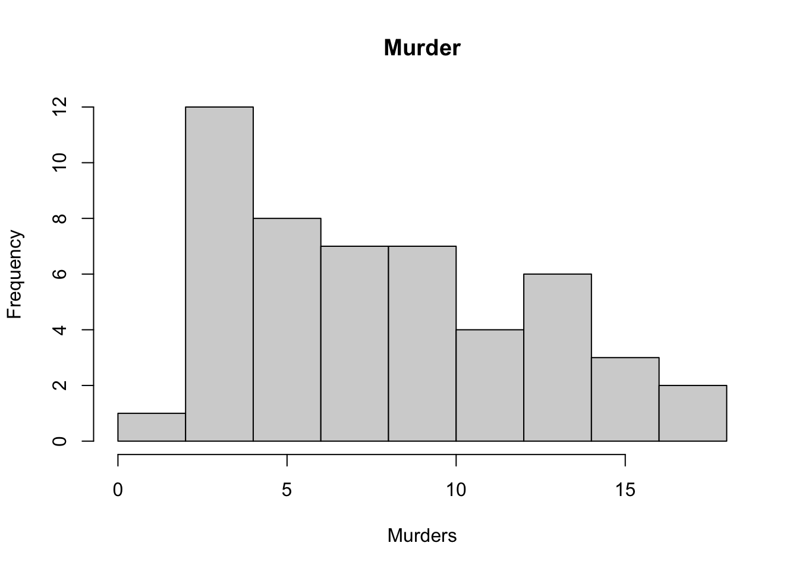
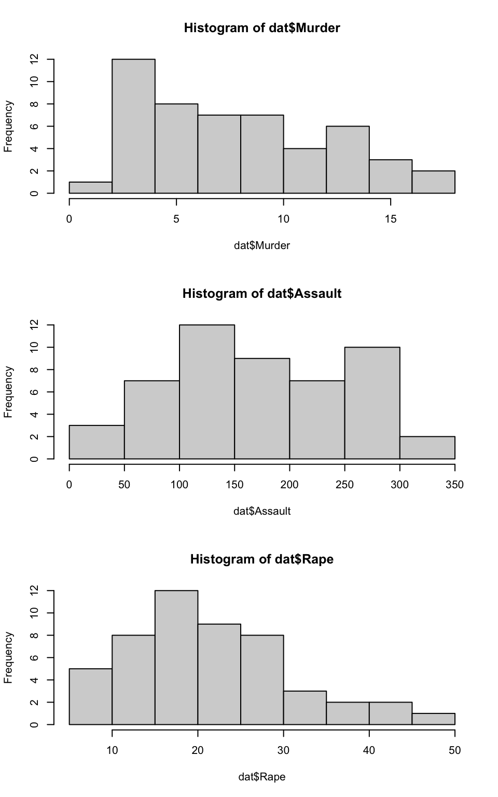

Assignment 1
This assignment is due on Canvas on Monday 9/20 before class, at 10:15 am.
General instructions for all assignments:
Use this file as the template for your submission. You can delete unnecessary text (e.g. these instructions) but make sure to keep the nicely formatted “Problem 1”, “Problem 2”, “a.”, “b.”, etc
Upload a your knitted PDF file to the Homework 01 submission section on gradescope. Name this file as: [PennID]_crim250_hw01.html (e.g. and “mcuellar_crim250_hw01.html”)
Each answer must be supported by written statements (unless otherwise specified)
Include the name of anyone you collaborated with at the top of the assignment
Assignment 1
- Install the datasets package and load the library using this code:
#install.packages("datasets")
library(datasets)Load the USArrests dataset and rename it dat. Note that this dataset comes with R, in the package datasets, so there’s no need to load data from your computer. Why is it useful to rename the dataset?
dat <- USArrests- Use this command to make the state names into a new variable called State. (This dataset has the state names as row names, so we just want to make them into a new variable. We also make them all lower case, because that will help us draw a map later - the map function requires the states to be lower case.)
dat$state <- tolower(rownames(USArrests))List the variables in the dataset USArrests.
names(dat)## [1] "Murder" "Assault" "UrbanPop" "Rape" "state"- What type of variable (from the DVB chapter) is Murder?
Answer: Quantitative
What R Type of variable is it?
class(dat$Murder)## [1] "numeric"What is this dataset showing? What do the numbers mean?
Draw a histogram of Murder with proper labels and title.
hist(dat$Murder, main="Murder", xlab="Murders")
- Please summarize Murder quantitatively. What are its mean and median? What is the difference between mean and median? What is a quartile, and why do you think R gives you the 1st Qu. and 3rd Qu.?
summary(dat$Murder)## Min. 1st Qu. Median Mean 3rd Qu. Max.
## 0.800 4.075 7.250 7.788 11.250 17.400- Repeat the same steps you followed for Murder, for the variables Assault and Rape. Now plot all three histograms together by using the command
par(mfrow=c(3,1))and then plotting each of the three.
par(mfrow=c(3,1))
hist(dat$Murder)
hist(dat$Assault)
hist(dat$Rape)
What does the command par do, in your own words (you can look this up by asking R ?par)?
?parWhat can you learn from plotting the histograms together?
Answer: It helps you compare them, and their properties, especially center and spread.
- Run this code:
library('maps')
library('ggplot2')
ggplot(dat, aes(map_id=state, fill=Murder)) +
geom_map(map=map_data("state")) +
expand_limits(x=map_data("state")$long, y=map_data("state")$lat)
What does this code do? Explain what each line is doing.
Answer: It makes a map. Read ?geom_map.